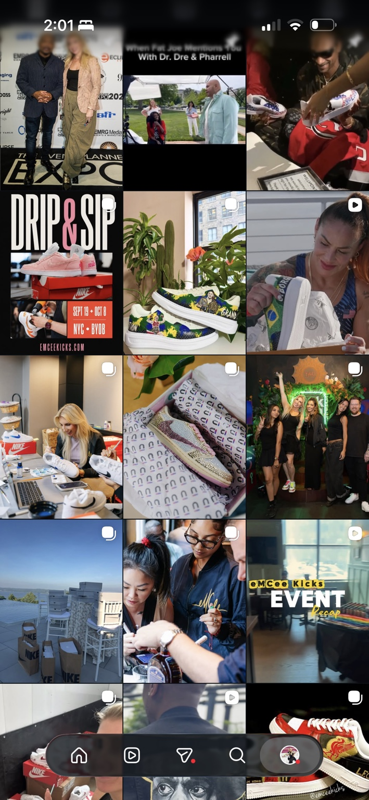
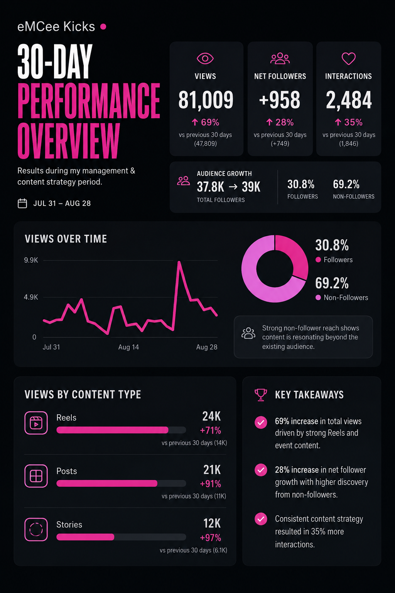

eMCee Kicks · Social Media Strategy
Turning custom sneakers into scroll-stopping stories.
I manage social content strategy, short-form production, event storytelling, publishing, and weekly analytics for eMCee Kicks — transforming a deep library of custom sneaker and activation content into a more consistent, discovery-led social presence.
+69%30-day views
47.8K → 81K
47.8K → 81K
+35%Interactions
1,846 → 2,484
1,846 → 2,484
+28%Net follower growth
+749 → +958
+749 → +958
+1.2KTotal audience
37.8K → 39K
37.8K → 39K

